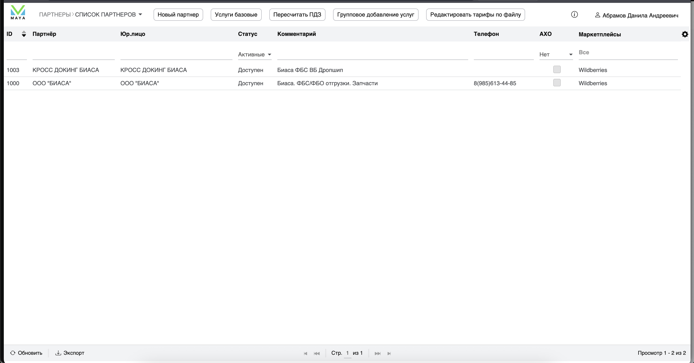
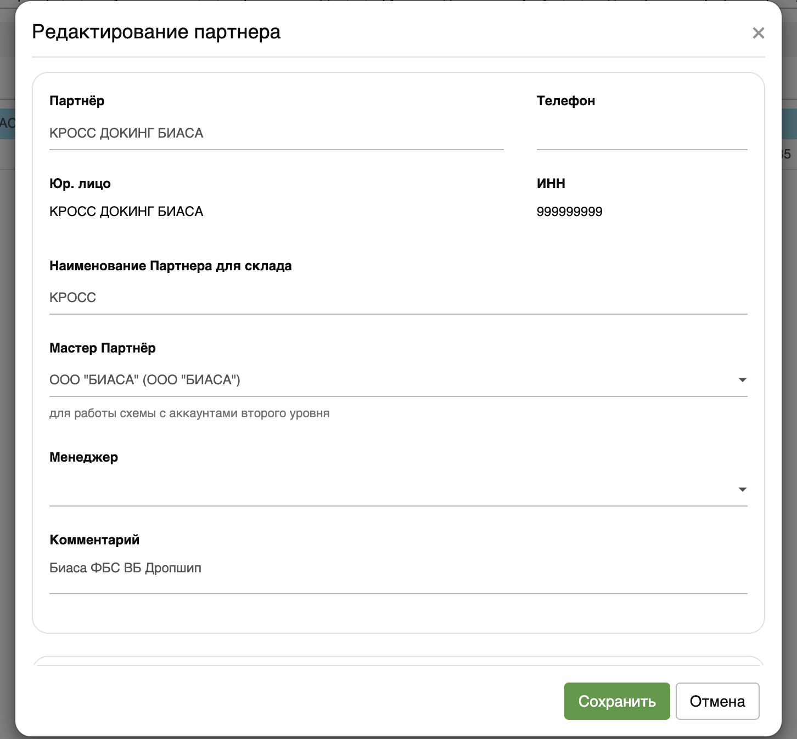

В списке выбираем "Список партнеров"
Для создания партнера сверху в поисковой строке WMS вводим "Партнеры"
В списке выбираем "Список партнеров"
Тут для примера уже доступны 2 партнера Biasa

С этих 2х партнеров можно взять пример правильности заполнения полей.
Q: Почему партнеров для Biasa - 2?
A: Биаса работает с маркетплейсами и продает товар по системе Drop Shipping (он же Кросс Докинг (см. Кросс Докинг. Общие положения))
Для этого Биасе на маркетплейсах необходимо разделение по виртуальным FBS складам (см. *Кросс Докинг.Разделение по FBS складам*)
Однако в Майе разделение API ключей по виртуальным складам реализовано только для Озона. (OZON 2.0 в
настройках)
А для ВБ пока был придуман "костыль" в виде слейв-клиента (Слейв-клиент и Мастер-клиент - 2 партнера,
которые фактически относятся к одной и той же компании. Для мастер-клиента устанавливаются реальные реквизиты
компании
для слейв-клиента можно установить любые реквизиты, необязательно реальные. Главное установить связь между 2-мя
партнерами
посредством установки чек-бокса "Мастер-партнер (см скрин ниже))"

Обьяснения по полям заполнения:
Большинство инструкций уже было расписано разработчиками Maya WMS. Смысла копировать всю информацию сюда не
вижу
На каждой странице WMS справа-сверху есть кнопка с ссылкой на wiki-страницу конкретной функции. (см. скрин
ниже)

ВАЖНОЕ УТОЧНЕНИЕ
WMS Майя работает на внутренних скриптах, которые фиксируют каждое изменение ( в том числе создание
нового партнера)
раз в 5-10 минут. Поэтому, если вы заполнили все данные по партнеру, нажали "сохранить", вам не выбило
ошибку, но партнер не появился в списке
- подождите 5-10 минут. Данные обновятся, партнер появится
На момент 26.05.2025..
... После создания и появления партнера в списке партнеров - вам необходимо отписаться в тех.поддержке,
чтобы они создали
Личный кабинет для партнера в DSS (гайд по DSS доступен на главной
странице мануала и по клику на гиперссылку)
Что такое Т.П, helpdesk и прочие вопросы по техподдержке - описано *ТУТ*